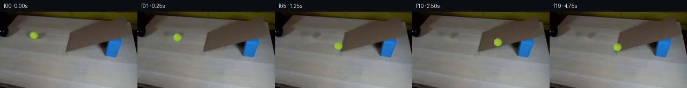

![首帧]()

Round 00
2026-11-04T20:22:08.600675+00:00像素候选变化代码 +180/−0inspection 更新
pixels 6dead7c8ebd9d94e · code 01fc967e177a3fbb
查看本轮 generate.py 真实 diff
--- previous/generate.py +++ current/generate.py @@ -0,0 +1,180 @@ +#!/usr/bin/env python3 +"""Generate the 20-frame PixelWorld continuation from the supplied first frame. + +Only local pixel operations are used. The fixed scene plate is made with a +small OpenCV inpaint over the original ball, and the moving ball is composited +with measured source colors, analytic antialiasing, and a soft contact shadow. +""" + +from pathlib import Path + +import cv2 +import numpy as np +from PIL import Image, ImageDraw + +import artifact_io + + +ROOT = Path(__file__).resolve().parent +W, H = 256, 144 + +# Centers measured/planned in OBSERVATION.md. Fractional coordinates retain +# a smooth deceleration even at this small raster size. +CENTERS = np.array( + [ + (63.0, 44.0), + (74.0, 48.0), + (85.0, 52.0), + (96.0, 56.0), + (107.0, 60.0), + (118.0, 64.0), + (126.0, 66.0), + (136.0, 63.3), + (145.0, 60.9), + (153.0, 58.8), + (159.0, 57.2), + (164.0, 55.8), + (167.0, 55.0), + (167.0, 55.0), + (165.0, 55.6), + (161.0, 56.7), + (155.0, 58.4), + (147.0, 60.6), + (137.0, 63.4), + (126.0, 66.5), + ], + dtype=np.float32, +) + + +def make_clean_plate(source: np.ndarray) -> np.ndarray: + """Remove the initial ball and its tiny contact shadow locally.""" + mask = np.zeros((H, W), np.uint8) + # The slightly oversized ellipse includes the antialiased fringe/shadow. + cv2.ellipse(mask, (63, 45), (12, 11), 0, 0, 360, 255, -1) + # TELEA follows the nearby low-frequency table colors into the small hole. + return cv2.inpaint(source, mask, 4.0, cv2.INPAINT_TELEA) + + +def accumulated_angles(centers: np.ndarray, radius: float = 7.1) -> np.ndarray: + """Rolling phase in radians, with direction reversal on rollback.""" + out = np.zeros(len(centers), np.float32) + for i in range(1, len(centers)): + delta = centers[i] - centers[i - 1] + distance = float(np.linalg.norm(delta)) + # Approach/uphill is positive; after the stop the ball reverses. + sign = -1.0 if i >= 14 else 1.0 + out[i] = out[i - 1] + sign * distance / radius + return out + + +def add_shadow(frame: np.ndarray, cx: float, cy: float, on_ramp: bool) -> np.ndarray: + """Composite a soft contact shadow on the current support surface.""" + yy, xx = np.mgrid[0:H, 0:W].astype(np.float32) + # Light is upper-left. On the incline the ellipse aligns with its tangent. + sx = cx + (1.8 if on_ramp else 1.4) + sy = cy + (6.4 if on_ramp else 6.2) + theta = np.deg2rad(-15.0 if on_ramp else 7.0) + ct, st = np.cos(theta), np.sin(theta) + dx, dy = xx - sx, yy - sy + u = ct * dx + st * dy + v = -st * dx + ct * dy + core = np.exp(-0.5 * ((u / 5.6) ** 2 + (v / 1.45) ** 2)) + # Limit the Gaussian's extremely faint global tail. + alpha = np.where(core > 0.012, core * (0.19 if on_ramp else 0.14), 0.0) + alpha = cv2.GaussianBlur(alpha.astype(np.float32), (0, 0), 0.55) + shadow_color = np.array([63.0, 56.0, 43.0], np.float32) + out = frame.astype(np.float32) … diff truncated; 93 more lines …